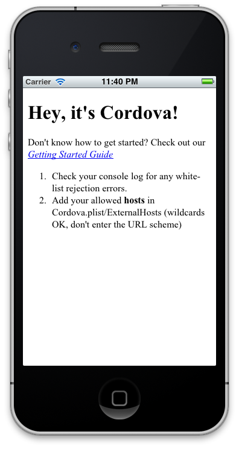

Getting Started with iOS
이 문서는 Cordova의 개발환경을 설정하고 샘플 어플리케이션을 실행할 수 있는 방법을 설명한다. Cordova는 과거에 Phonegap으로 불리었기 때문에 일부에서 Phonegap의 이름이 남아있을 수 있다.
요구사항
- Xcode 4.x
- Intel 기반의 Mac OS X Lion 또는 이상(10.7+)
- 장치에 필요한 것들
- Apple iOS 장치 (iPhone, iPad, iPod Touch)
- iOS developer certificate
iOS와 SDK과 Cordova 설치하기
- Mac App Store 에서 Xcode를 설치한다.
-
Apache Cordova 에서 최신버전의 Cordova를 다운받는다.
- 압축을 풀면
-
lib/ios폴더에서 Cordova iOS 버전을 찾을 수 있다.
새 프로젝트 Setup
- 'Cordova-2.0.0.pkg' 를 실행한다.
-
bin 폴더를 하드디스크로 복사한다.
Terminal.app 을 실행한다.
- 복사된 bin 폴더를 Terminal.app 아이콘 위로 드래그한다. 그러면 새로운 터미널 윈도우가 열린다.
-
터미널에
./create <project_folder_path> <bundle_id> <project_name>를 입력하고 "Enter" 를 친다.<project_folder_path> is the path to your new Cordova iOS project (it must be empty if it exists) <package_name> is the package name, following reverse-domain style convention <project_name> is the project name 새로 만든 프로젝트 폴더로 이동해서
- 폴더안의
.xcodeproj를 실행한다.
Hello World
- Xcode의 Project Navigator 에서
www폴더를 선택한다. -
index.html를 선택하고 -
<body>아래에 이하의 코드를 추가한다.:<h1>Hello World</h1>
이 외에 관련된 JS, CSS파일들을 추가할 수 있다.
Deploy to Simulator
- 툴바에 있는 Scheme 드롭다운 메뉴의 Target이 Helloworld가 되게 한다.
- 툴바에 있는 Scheme 드롭다운 메뉴의 Active SDK 를 iOS [version] Simulator 로 바꾼다.
- Run 버튼을 선택한다.
Deploy to Device
-
Supporting Files 그룹 아래의
HelloWorld-Info.plist파일을 연다. - Change BundleIdentifier to the identifier provided by Apple or your own bundle identifier
- If you have a developer license, you can run the Assistant to register your app
- 툴바의 Scheme 드롭다운 메뉴에서 Active SDK칸에 장치를 선택한다.
- 장치를 USB로 연결해야 한다.
-
Run 버튼을 눌러 실행시킨다.

Build Your App
지금까지 시뮬레이터와 실제 장치를 통해 Xcode 프로젝트를 설정하고 빌드하고 구동하는 방법읏 살펴보았다. 웹 어플리케이션을 만들기 위해 Xcode가 필요하지 않다는 사실을 명심하자. Xcode가 아니라 원하는 에디터를 사용해서 개발하고 단지 빌드할때만 Xcode를 이용해도 된다. command-line tools 을 사용하면 Xcode가 자동으로 빌드해줄 것이다.